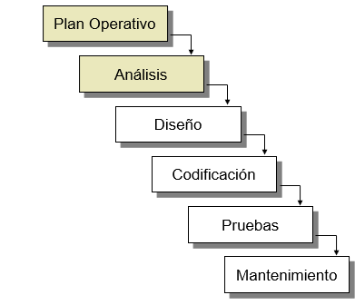

Investigación
Laboratorio 1, 15 enero, 2018

Ciclo de vida y desarrollo de los sistemas de información
El ciclo de vida de un sistema de información está compuesto por diferentes etapas de tal manera que conformen un conjunto de tareas organizadas que nos permiten llegar a la solución de un determinado problema, estas fases se muestran a continuación:
El plan operativo comprende todo aquello que nos permite saber a dónde vamos y por qué razón, es decir se analizará, por ello, se pretende verificar, entre otras cosas, si el proyecto es viable, qué riesgos podrían existir y qué recursos serían necesarios.
El análisis permitirá delimitar el proyecto tanto en aquellos aspectos que se abarcarán dentro del mismo, como los que no para saber con exactitud lo que se quiere como resultado, esto se documentará de tal forma que se pueda tener un acceso posterior.
En la fase del Diseño, podremos implementar de manera más efectiva lo que se quiere lograr con el proyecto, así pues, se hará uso de modelos que nos ayuden a visualizarlo y concretarlo con mayor facilidad de tal forma que se sepa a detalle qué funciones tendrá el sistema.
Para la etapa de Implementación o Codificación debemos asegurarnos de haber entendido en verdad lo que el proyecto requiere y acto seguido desarrollar, lo que significa que debemos hacer el código lo más entendible posible.
Sabemos que el objetivo de cualquier prueba es detectar los fallos que existen, así pues, en esta fase se podrá comprobar qué funciona y qué no. Existen las pruebas de unidad que es cuando buscamos comprobar un componente en concreto, y las de integración que incluye a varios. Asimismo, también están las pruebas generales del sistema, las llamadas alfa, las beta, que son ajenas al equipo de desarrollo y el test de aceptación que nos dará entrada al siguiente paso, el mantenimiento.
El mantenimiento incluye eliminar defectos encontrados, adaptar el proyecto a nuevas necesidades, así como añadir nuevas funcionalidades.